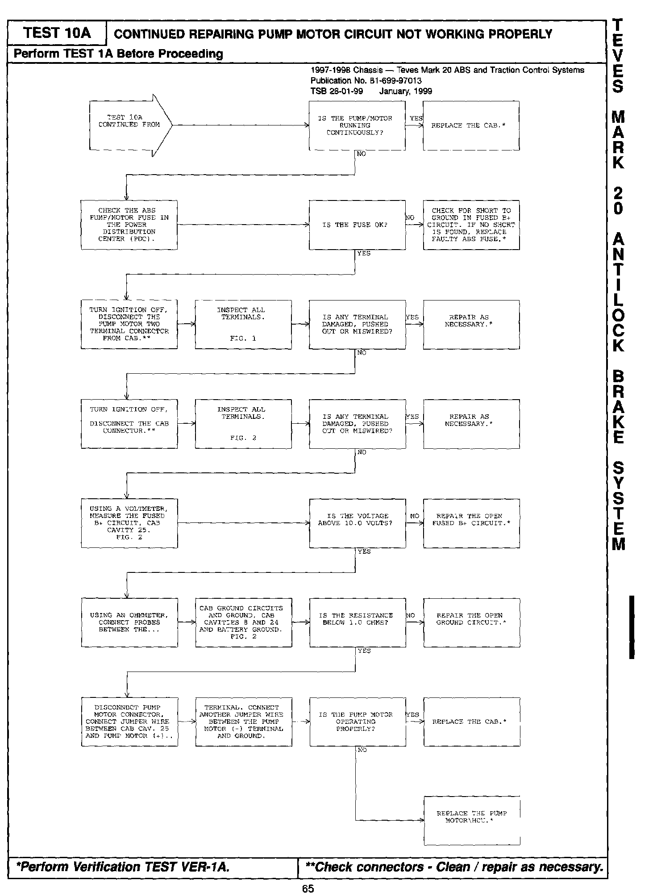
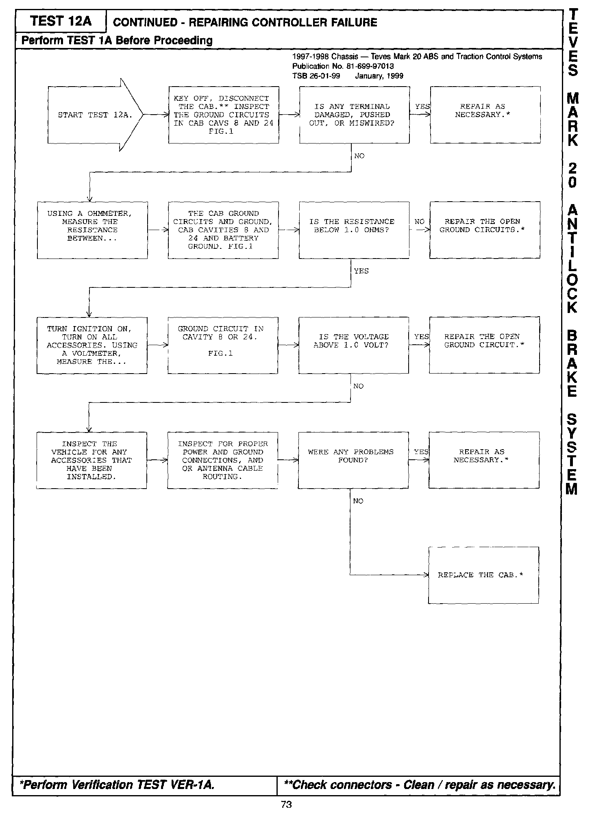
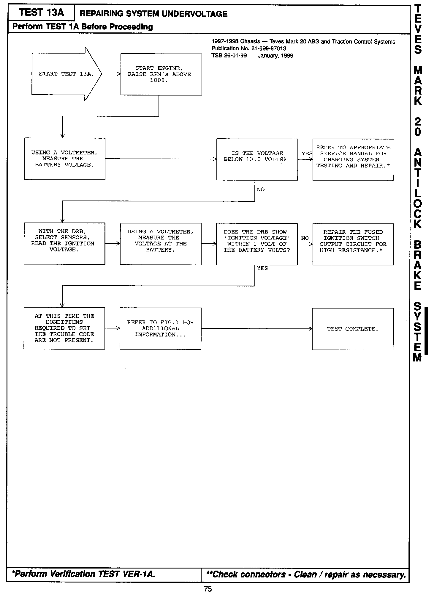
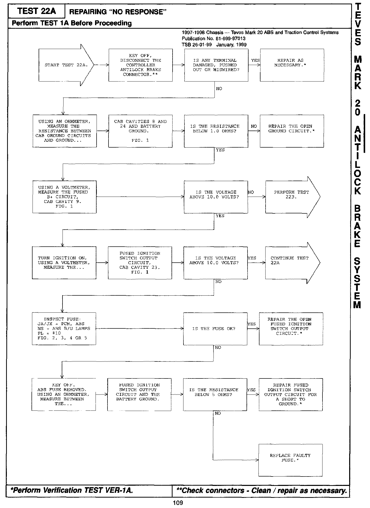

ABS/TCS - Diagnostic Test Revisions
NUMBER: 26-01-99GROUP: Miscellaneous
DATE: January, 1999
REVISIONS ARE HIGHLIGHTED WITH BLACK BARS IN THE MARGIN
Models:
1997-1998 Teves Mark 20 ABS and Traction Control Diagnostic Manual - Publication Number 81-699-97013
DESCRIPTION OF CHANGES
Revision to the Pump Motor Circuit test

65
Revision to the Controller Failure test

73
Revision to the System Under Voltage test

75
Revision to the No Response test

109